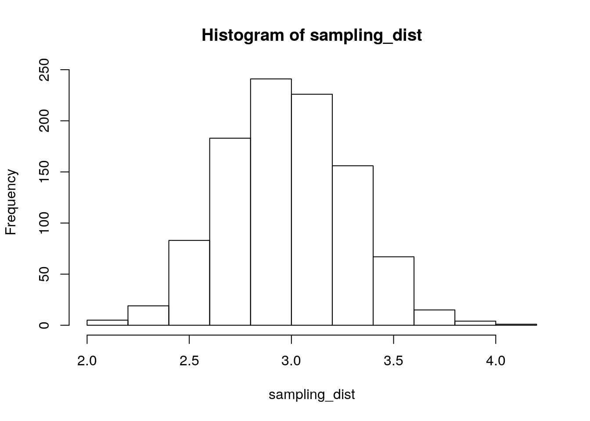

2 Principles of Programming
It may seem strange to begin a statistics class with two weeks on programming. It is strange. Here is why I have made this strange choice.
First, as a working social scientist, most of the time you spend on data analysis won’t be on the analysis part. It’ll be on obtaining and cleaning the data, to get it in a form that makes sense to analyze. Good programming skills will let you spend less time cleaning data and more time publishing papers.
Second, even if you don’t want to develop good programming habits, journals are going to force you to. Every reputable political science journal requires that you provide replication scripts, and some of the best (e.g., American Journal of Political Science) have begun auditing the replication materials as a condition of publication. Better to learn The Right Way now when you have lots of time than to be forced to when you’re writing a dissertation or on the market or teaching your own courses.
Third, while I feel embarrassed to invoke the cliché that is Big Data, that doesn’t mean it’s not a real thing. Political scientists have access to more data and more computing power than ever before. You can’t collect, manage, clean, and analyze large quantities of data without understanding the basic principles of programming.
As Bowers (2011) puts it, “Data analysis is computer programming.” By getting a PhD in political science,1 by necessity you’re going to become a computer programmer. The choice before you is whether to be a good one or a bad one.
G. Wilson et al. (2014) list eight “best practices for scientific computing.” The first two encapsulate most of what you need to know:
- Write programs for people, not computers.
- Let the computer do the work.
2.1 Write Programs for People, Not Computers
The first two words here—write programs—are crucial. When you are doing analysis for a research project, you should be writing and running scripts, not typing commands into the R (or Stata) console. The console is ephemeral, but scripts are forever, at least if you save them.
Like the manuscripts you will write to describe your findings, your analysis scripts are a form of scientific communication. You wouldn’t write a paper that is disorganized, riddled with grammatical errors, or incomprehensible to anyone besides yourself. Don’t write your analysis scripts that way either.
Each script should be self-contained, ideally accomplishing one major task. Using an omnibus script that runs every bit of analysis is like writing a paper without paragraph breaks. A typical breakdown of scripts for a project of mine looks like:
0-download.r: downloads the data1-clean.r: cleans the data2-run.r: runs the main analysis3-figs.r: generates figures
The exact structure varies depending on the nature of the project. Notice that the scripts are numbered in the order they should be run.
Within each script, write the code to make it as easy as possible for your reader to follow what you’re doing. You should indent your code according to style conventions such as http://adv-r.had.co.nz/Style.html. Even better, use the Code -> Reindent Lines menu option in R Studio to automatically indent according to a sane style.
# Bad
my_results <- c(mean(variable),
quantile(variable,
probs = 0.25),
max(variable))
# Better
my_results <- c(mean(variable),
quantile(variable,
probs = 0.25),
max(variable))Another way to make your code readable—one that, unfortunately, cannot be accomplished quite so algorithmically—is to add explanatory comments. The point of comments is not to document how the language works. The following comment is an extreme example of a useless comment.
# Take the square root of the errors and assign them to
# the output variable
output <- sqrt(errors)A better use for the comment would be to explain why you’re taking the square root of the errors, at least if your purpose in doing so would be unclear to a hypothetical reader of the code.
My basic heuristic for code readability is If I got hit by a bus tomorrow, could one of my coauthors figure out what the hell I was doing and finish the paper?
2.2 Let the Computer Do the Work
Computers are really good at structured, repetitive tasks. If you ever find yourself entering the same thing into the computer over and over again, you are Doing It Wrong. Your job as the human directing the computer is to figure out the structure that underlies the repeated task and to program the computer to do the repetition.
For example, imagine you have just run a large experiment and you want to estimate effects by subgroups.2 Your respondents differ across four variables—party ID (R or D), gender (male or female), race (white or nonwhite), and education (college degree or not)—giving you 16 subgroups. You could copy and paste your code to estimate the treatment effect 16 times. But this is a bad idea for a few reasons.
Copy-paste doesn’t scale. Copy-paste is managable (albeit misguided) for 16 iterations, but probably not for 50 and definitely not for more than 100.
Making changes becomes painful. Suppose you decide to change how you calculate the estimate. Now you have to go back and individually edit 16 chunks of code.
Copy-paste is error-prone, and insidiously so. If you do the calculation wrong all 16 times, you’ll probably notice. But what if you screwed up for just one or two cases? Are you really going to go through and check that you did everything right in each individual case?
We’re going to look at the most basic ways to get the computer to repeat structured tasks—functions and control flow statements. To illustrate these, we will use a result you discussed in Stat I: the central limit theorem.
The central limit theorem concerns the sampling distribution of the sample mean, \[\begin{equation*} \bar{X} = \frac{1}{N} \sum_{n = 1}^{N} X_n, \end{equation*}\]where each \(X_n\) is independent and identically distributed with mean \(\mu\) and variance \(\sigma^2\). Loosely speaking, the CLT says that as \(N\) grows large, the sampling distribution of \(\bar{X}\) becomes approximately normal with mean \(\mu\) and variance \(\sigma^2 / N\).
Here’s what we would need to do to see the CLT in practice. We’d want to take a bunch of samples, each of size \(N\), and calculate the sample mean of each. Then we’d have a sample of sample means, and we could check to verify that they are approximately normally distributed with mean \(\mu\) and variance \(\sigma^2 / N\). This is a structured, repetitive task—exactly the kind of thing that should be programmed. We’ll try it out with a random variable from a Poisson distribution with \(\lambda = 3\), which has mean \(\mu = 3\) and variance \(\sigma^2 = 3\).
First things first. We can use the rpois function to draw a random sample of \(N\) numbers from the Poisson distribution.
samp <- rpois(10, lambda = 3)
samp## [1] 2 3 8 3 5 4 3 4 2 2To calculate the sample mean, we simply use the mean function.
mean(samp)## [1] 3.6We are interested in the distribution of the sample mean across many samples like this one. To begin, we will write a function that automates our core task—drawing a sample of \(N\) observations from Poisson(3) and calculating the sample mean. A function consists of a set of arguments (the inputs) and a body of code specifying which calculations to perform on the inputs to produce the output.
pois_mean <- function(n_obs) {
samp <- rpois(n_obs, lambda = 3)
ans <- mean(samp)
return(ans)
}This code creates a function called pois_mean. It has a single argument, called n_obs. It generates a random sample of n_obs draws from Poisson(3) and calculates its sample mean. It then returns the sample mean as the output.
Let’s try calling this function a few times, each with a sample size of \(N = 30\). Your output will differ slightly from what’s printed here, since the function is generating random numbers.
pois_mean(n_obs = 30)## [1] 3.0333pois_mean(n_obs = 30)## [1] 2.4667pois_mean(n_obs = 30)## [1] 2.9667Remember that what we’re interested in is the sampling distribution of the sample mean—the distribution of the sample mean across every possible sample of \(N\) observations. We can approximate this distribution by running pois_mean many times (e.g., 1000 or more). This would be infeasible via copy-paste. Instead, we will use a for loop.
# Set up a vector to store the output
n_replicates <- 1000
sampling_dist <- rep(NA, n_replicates)
for (i in 1:n_replicates) {
sampling_dist[i] <- pois_mean(n_obs = 30)
}Here’s how the for loop works. We specified i as the name of the index variable, with values 1:n_replicates. The for loop takes each value in the sequence, assigns it to the variable i, runs the given expression (in this case, assigning the output of pois_mean to the i’th element of sampling_dist), and then moves on to the next value in sequence, until it reaches the end.
Let’s take a look at the results and compare them to our expectations.
mean(sampling_dist) # Expect 3## [1] 2.9952var(sampling_dist) # Expect 1/10## [1] 0.096944hist(sampling_dist) # Expect roughly normal
For loops are fun, but don’t overuse them. Many simple operations are vectorized and don’t require a loop. For example, suppose you want to take the square of a sequence of numbers. You could use a for loop …
input <- c(1, 3, 7, 29)
output <- rep(NA, length(input))
for (i in 1:length(input)) {
output[i] <- input[i]^2
}
output## [1] 1 9 49 841… but it’s faster (in terms of computational speed) and easier to just take advantage of vectorization:
input^2## [1] 1 9 49 841Another useful piece of control flow is if/else statements. These check a logical condition—an expression whose value is TRUE or FALSE—and run different code depending on the value of the expression. (You may want to catch up on the comparison operators: ==, >, >=, <, <=, etc.)
Let’s edit the pois_mean function to allow us to calculate the median instead of the mean. We’ll add a second argument to the function, and implement the option using an if/else statement.
pois_mean <- function(n_obs, use_median = FALSE) {
samp <- rpois(n_obs, lambda = 3)
if (use_median) {
ans <- median(samp)
} else {
ans <- mean(samp)
}
return(ans)
}A couple of things to notice about the structure of the function. We use a comma to separate multiple function arguments. Also, we’ve specified FALSE as the default for the use_median argument. If we call the function without explicitly specifying a value for use_median, the function sets it to FALSE.
pois_mean(n_obs = 9)## [1] 3.7778pois_mean(n_obs = 9, use_median = TRUE)## [1] 2pois_mean(n_obs = 9, use_median = FALSE)## [1] 2.6667There is a vectorized version of if/else statements called, naturally, the ifelse function. This function takes three arguments, each a vector of the same length: (1) a logical condition, (2) an output value if the condition is TRUE, (3) an output value if the condition is FALSE.
x <- 1:10
big_x <- x * 100
small_x <- x * -100
ifelse(x > 5, big_x, small_x)## [1] -100 -200 -300 -400 -500 600 700 800 900 1000Functions, for loops, and if/else statements are just a few of the useful tools for programming in R.3 But even these simple tools are enough to allow you to do much more at scale than you could with a copy-paste philosophy.
References
Bowers, Jake. 2011. “Six Steps to a Better Relationship with Your Future Self.” The Political Methodologist 18 (2): 2–8.
Wilson, Greg, D A Aruliah, C Titus Brown, Neil P Chue Hong, Matt Davis, Richard T Guy, Steven H D Haddock, et al. 2014. “Best Practices for Scientific Computing.” PLOS Biology 12 (1): e1001745.
Or whatever other social science field.↩
There could be statistical problems with this kind of analysis, at least if the subgroups were specified post hoc. See https://xkcd.com/882/ (“Significant”). We’re going to leave this issue aside for now, but we’ll return to it later when we discuss the statistical crisis in science.↩
Others include the
replicatefunction, theapplyfamily of functions (sapply,lapply,tapply,mapply, …), the foreach package, the purrr package, just to name a few of the most useful off the top of my head.↩